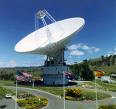
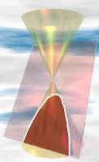

Parabola

When we kick a soccer ball (or shoot an arrow, fire a missile or throw a stone) it arcs up into the air and comes down again ...
... following the path of a parabola!
(Except for how the air affects it.)
Try kicking the ball:

Definition
A parabola is a curve where any point is at an equal distance from:
- a fixed point (the focus), and
- a fixed straight line (the directrix)
On Paper
Get a piece of paper, draw a straight line on it, then make a big dot for the focus (not on the line!).
Now play around with some measurements until you have another dot that's exactly the same distance from the focus and the straight line.
Keep going until you have lots of little dots, then join the little dots and you will have a parabola!
Just like in this interactive (try moving point P):

Names
Here are the important names:
- the directrix and focus (explained above)
- the axis of symmetry (goes through the focus, at right angles to the directrix)
- the vertex (where the parabola makes its sharpest turn) is halfway between the focus and directrix
Reflector

And a parabola has this amazing property:
Any ray parallel to the axis of symmetry gets reflected off the surface straight to the focus.
And that explains why that dot is called the focus ...
... because that's where all the rays get focused!
So the parabola can be used for:

- satellite dishes,
- radar dishes,
- concentrating the sun's rays to make a hot spot,
- the reflector on spotlights and torches,
- and so on

We also get a parabola when we slice through a cone (the slice must be parallel to the side of the cone).
So the parabola is a conic section (a section of a cone).
Equations

The simplest equation for a parabola is y = x2

Turned on its side it becomes y2 = x
(or y = √x for just the top half)

A little more generally:
y2 = 4ax
where a is the distance from the origin to the focus (and also from the origin to directrix)
Where does y2 = 4ax come from?
Looking at the diagram above with the vertex at the origin (0,0):
- The focus is at (a, 0)
- The directrix is the vertical line x = −a
For any point (x, y) on the parabola:
Example: Find the focus for the equation y2=5x
Converting y2 = 5x to y2 = 4ax form, we get y2 = 4 (5/4) x,
so a = 5/4, and the focus of y2 = 5x is:
F = (a, 0) = (5/4, 0)
The equations of parabolas in different orientations are as follows:

y2 = 4ax

y2 = −4ax

x2 = 4ay

x2 = −4ay
Which way does it open?
- When x is squared (like x2 = 4ay), it opens up or down (like a bowl).
- When y is squared (like y2 = 4ax), it opens left or right (on its side)
Measurements for a Parabolic Dish
If you want to build a parabolic dish where the focus is 200 mm above the surface, what measurements do you need?
To make it easy to build, let's have it pointing upwards, and so we choose the x2 = 4ay equation.
And we want "a" to be 200, so the equation becomes:
x2 = 4ay = 4 × 200 × y = 800y
Rearranging so we can calculate heights:
y = x2/800
And here are some height measurements as you run along:
 |
Distance Along ("x") | Height ("y") |
| 0 mm | 0.0 mm | |
| 100 mm | 12.5 mm | |
| 200 mm | 50.0 mm | |
| 300 mm | 112.5 mm | |
| 400 mm | 200.0 mm | |
| 500 mm | 312.5 mm | |
| 600 mm | 450.0 mm | |
Try to build one yourself, it could be fun! Just be careful, a reflective surface can concentrate a lot of heat at the focus.